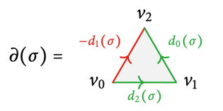

11 Homology
Singular simplices
Definition 11.1
Standard n-simplex
For \(n\in\N\), the standard \(\bm n\)-simplex is the subspace
For \(0 \le i \le n\), the \(\bm i\)-th vertex \(v_i\) of \(\Delta^n\) is the standard basis vector \(e_{i+1} \in \R^{n+1}\).

Remark 11.2
The standard \(n\)-simplex is the convex hull of its vertices, standard basis vectors.
Definition 11.3
Singular n-simplex
A singular \(\bm n\)-simplex in \(X\) is a continuous map \(\sigma:\Delta^n\to X\).
Let \(\delta^i : \Delta^{n-1} \hookrightarrow \Delta^n\) be the embedding that maps the vertices \((v_0, \dots, v_{n-1})\) of \(\Delta^{n-1}\) affinely to the vertices \((w_0, \dots, w_{i-1}, w_{i+1}, \dots, w_n)\) of \(\Delta^n\).
The \(\bm i\)-th face \(d_i(\sigma)\) of a singular \(n\)-simplex \(\sigma\) is the restriction of \(\sigma\) via the embedding \(\delta^i\)

Remark 11.4
- Singular indicates that \(\sigma\) does not need to be an embedding.
- A singular \(0\)-simplex is essentially a point.
- A singular \(1\)-simplex is essentially a path \(\gamma\) (after identifying
\(\Delta^1 \cong [0,1]\)).
- Its \(0\)-th face is the endpoint \(\gamma(0)\).
- Its \(1\)-st face is the endpoint \(\gamma(1)\).
Singular chains
Definition 11.5
Free abelian group
For a set \(S\), the free abelian group on \(S\) is
If \(|S| = r < \infty\), we say that \(\Z S\) has rank \(r\).
Remark 11.6
This group is free in the following sense:
- Every homomorphism of abelian groups \(\Z S \to A\) is uniquely determined by map of sets \(S \to A\) using the canonical inclusion \(S \hookrightarrow \Z S\).
- This can be expressed by an adjunction \(F \dashv U\) of a free functor \(F : \mathbf{Set} \to \mathbf{Ab}\) and a forgetful functor \(U : \mathbf{Ab} \to \mathbf{Set}\) similarly to vector spaces.
Definition 11.7
Singular chain
The group of singular \(\bm n\)-chains \(\Csing_n(X)\) of \(X\) is the free abelian group generatoed by the singular \(n\)-simplices in \(X\):
The \(\bm n\)-th boundary map \(\partial_n : \Csing_n(X) \to \Csing_{n-1}(X)\) is the homomorphism defined uniquelly by
A chain with zero boundary \(\s \in \ker \partial_n\) is called a singular cycle.
A chain \(\s \in \Im \partial_{n+1}\) is called a singular boundary.

Lemma 11.8
Every boundary is a cycle
Proof
Observe that
Then we have
Chain complexes
Definition 11.9
Chain complex
A chain complex of abelian groups is a pair \((C_\bullet, \partial)\) where
- \(C_\bullet\) is a graded abelian group, i.e. a family \((C_n)_{n\in\Z}\) of abelian groups
- \(\partial\) is a differential: For every \(n\in\Z\), we have a homomorphism
We say that \(C_n\) is in degree \(n\).
Example 11.10
Denote by \(\Z[k]\) the chain complex
where the only non-trivial abelian group is in degree k.
2.
Consider the chain complex
where th only non-trivial entries are in degrees 0 and 1. Then, the differential \(\partial\) can be any homomorphism \(\Z \to \Z\), so it is multiplication by some integer \(d \in \Z\).
3.
Consider the chain complex
where the differentials are given by
Then, we have
Homology
Definition 11.11
Homology group
Let \(C = (C_\bullet, \partial)\) be a chain complex.
The \(\bm n\)-cycles and \(\bm n\)-boundaries are respactively the subgroups
As \(\partial^2 = 0\), we have \(B_n(C) \subseteq Z_n(C)\).
The \(\bm n\)-th homology group of \(C\) is the quotient group
Example 11.12
Recall the chain complexes in E.11.10.
1.
Only \(\partial_k\) has non-trivial kernel, and all maps are \(0\). Thus,
- all chains are cycles,
- all boundaries are zero
2.
Consider the chain complex with \(\partial_1\) being multiplication by \(d\neq 0\):
Then, we have
- \(\partial_0\) has the only non-trivial kernel: \(\ker \partial_0 = \Z\),
- \(\partial_1\) has the only non-trivial image: \(\Im \partial_1 = d\Z\).
3.
We have that \(x - y = (y - x) - (x-y)\), so \(\Im \partial_1 = (y-x) \Z \oplus (z-x) \Z\).
Then, we have
Additionally, we have \(\ker \partial_1 = (a + b - c) \Z = \Im \partial_2\) and \(\ker \partial_2 = 0\), so we get
Functoriality of singular homology
Definition 11.13
Chain map
If \(C = (C_\bullet, \partial_C)\) and \(D = (D_\bullet, \partial_D)\) are chain complexes, as sequence of maps (homomorphisms)
is called a chain map of a map of chain complexes if for all \(n\), we have
Lemma 11.14
Chain maps descends to homology
\(\begin{align*} \text{Let } & C = (C_\bullet, \partial_C), (D_\bullet, \partial_D) \text{ be chain complexes,} \\ & f_\bullet : C_\bullet \to D_\bullet \text{ be a chain map.} \end{align*}\)
Proof
We claim that \(f_\bullet\) restricts to cycles and boundaries:
Let \(z\) be an \(n\)-cycle in \(C\).
\(\begin{align*} & \iff \partial z = 0 \\ & \implies \partial (f_n z) = f_{n-1} \partial z = 0 \\ & \implies f_n z \text{ is an } n\text{-cycle in } D. \end{align*}\)
Now, let \(z = \partial w\) be an \(n\)-boundary in \(C\).
\(\begin{align*} & \implies f_n z = \partial f_{n+1} w \\ & \implies f_n z \text{ is an } n\text{-boundary in } D. \end{align*}\)
So \(f_\bullet\) descends to the quotients, the homologies.
Definition 11.15
Induced morphisms of singular chains
Let \(f : X \to Y\) be a continuous map.
- Any \(n\)-simplex \(\sigma : \Delta^n \to X\) determines an \(n\)-simplex \(f_*\s = f\circ\s\) in \(Y\).
- This extends to a unique homomorphism of abelian groups
Proposition 11.16
Functoriality of singular homology
- \(f_*\) is a chain map.
- Therefore, it induces maps on the homology groups
Proof
Let \(\displaystyle z = \sum_j n_j \s_j \in \Csing_n(X)\).
Then, we have
Notice that
Substituting \((**)\) into \((*)\), we get
By Lemma 11.14, \(f_*\) induces maps on the homology groups.
Δ-complexes
Definition 11.17
Δ-complex structure
A \(\bm\Delta\)-complex structure on a space \(X\) is a collection of simplices of \(X\)
such that
Example 11.18
Consider the following \(\Delta\)-complex structure on the torus and the Klein bottle:

Both have
- two \(2\)-simplices,
- three \(1\)-simplices,
- one \(0\)-simplex,
however, the face maps are different:
- The torus has \(d_0(V) = b\),
- while the Klein bottle has \(d_0(V) = c\).
So knowing the simplices alone is not enough to understand \(X\); the face maps encode important information.
Remark 11.19
The conditions for a \(\Delta\)-complex on \(X\) ensure that we can recover \(X\) from the simplices if we know what the faces of the simplices are.
We can organize this data into a semi-simplicial set, which is a combinatorial way to encode the \(\Delta\)-complex. Thus, \(X\) is recovered via geometric realization.
Not all spaces arise this way: any \(\Delta\)-complex is a CW-complex.
Definition 11.20
Let \((X, \Delta_X)\) be a \(\Delta\)-complex, and let
be the subgroup spanned by \(n\)-simplices which lies in \(\Delta_X\).
Remark 11.21
The properties \((1)\) and \((2)\) of the \(\Delta\)-complex structure (D.11.17) ensure that the differential \(\partial_n\) of \(\Csing_n(X)\) restricts to \(C_n^\Delta(X, \Delta_X)\).
Thus, we have a chain complex
Definition 11.22
Simplicial chain complex
The simplicial chain complex of a \(\Delta\)-complex \((X, \Delta_X)\) is
The simplicial homology of \((X, \Delta_X)\) is
Example 11.23
Recall the \(\Delta\)-complex structure on a torus:

We compute its homology:
The chain groups are generated by
- the triangles: \(\Z U \oplus \Z V\),
- edges: \(\Z a \oplus \Z b \oplus \Z c\),
- vertex: \(\Z P\).
The boundary of an edge is the tip minus end of the edge:
For a triangle, we take a signed linear combination of the boundary edges:
We add zero maps to obtain a chain complex:
Then, we get the homology groups
What this tells us about the torus:
In \(H_0\), we identify all vertices that are connected by an ende. The rank of this abelian group is the number of path components.
In the torus, the generators \([a]\) and \([b]\) are represented by the loops \(\alpha\) and \(\beta\) in E.9.3. They generate the fundamental group. For path-connected spaces, \(H_1\) is the abelianization of the fundamental group (the quotient by commutators \(x\cdot y - y\cdot x\)).
The rank of \(H_2\) is \(1\), reflecting that the torus is an orientable surface. The Klein bottle is not orientable and \(H_2\) has rank \(2\).
Remark 11.24
Advantages of simplicial homology:
- By construction, if \(\Delta_X\) contains only \(k\)-simplices for \(k\le n\), then \(H_k^\Delta(X, \Delta_X) = 0\) for \(k > n\). We do not have such a simple criterion for simplicial homology.
- The chain complexes are much smaller than the singular chain complexes. This often makes simplicial homology computationally directly. However, it is more difficult to prove properties like homotopy invariance directly.
Remark 11.25
Choose two \(\Delta\)-structures on a space and compute simplicial homology for both of them. Notice that you get isomorphic homology groups.
Theorem 11.26
The map induced by the inclusion of simplices
induces an isomorphism on homology. In particular,
is independent of the choice of \(\Delta\)-complex structure.